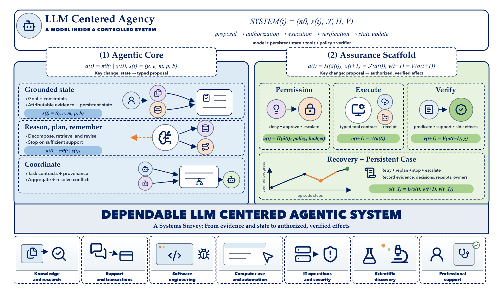

LLM application
One invocation or a fixed sequence; control remains outside the model.
2026 comprehensive systems survey
Mehrdad Zakershahrak · Honorary Research Fellow, School of Computing, Macquarie University
A systems view of how language models become evidence-aware, bounded, and governable actors in the world.
Fluent generation is not dependable autonomy. Reliability emerges from explicit state, evidence, action contracts, verification, and proportionate governance.
Abstract
Large language models are increasingly embedded in systems that retrieve evidence, maintain state, invoke tools, coordinate specialized components, and act over extended horizons. We use LLM-centered agentic systems as the umbrella term for this systems family while distinguishing fixed language model applications and retrieval pipelines from workflows, bounded agents, and multi-agent systems by adaptive control, persistent state, and action authority.
Our central argument is that dependable agency is a representation and transition-control problem as much as a model-capability problem: heterogeneous evidence must be transformed into bounded, reviewable, and verifiably completed effects through explicit, typed, persistent data structures. The survey develops that argument across six interacting layers: grounding and perception; memory and state; reasoning and planning; action and tool interfaces; coordination and interoperability; and safety, governance, and observability.
Across this literature, retrieved content is not automatically admissible evidence, model output is not authorization, a successful tool response is not proof of the intended effect, and a benchmark score is not a transferable guarantee about an unrecorded system. Reliable agency instead requires a persistent case linking evidence, state, proposals, permissions, execution receipts, verified effects, resources, and responsibility.
Systems argument
What must surround a language model before it can move from producing a response to choosing and verifying actions over time?

Open Figure 1 at full size ↗Practical rule. Use the least autonomy that solves the task: RAG for attributable evidence, workflows for predictable control, bounded agents for uncertain but verifiable work, and multi-agent systems only when distinct roles create a measurable advantage.
Operational taxonomy
The survey does not place RAG, workflows, and agents on a single maturity ladder. It compares them through control flow, state, and action authority.
One invocation or a fixed sequence; control remains outside the model.
A fixed retrieve, construct-context, and generate pipeline.
A developer-authored graph or process with mostly explicit branching.
The model selects permitted actions and revises plans from observations.
Multiple bounded agents exchange tasks, evidence, or control.
Where control decisions are made.
What part of the system is changed.
What persists across interactions.
What a reported result can establish.
Literature atlas
The full bibliography contains 222 sources. Figure 2 maps 98 representative works to a primary contribution while acknowledging that many methods span several layers.
Browse the taxonomy-aligned literature index or inspect the complete bibliography sources.
Quick start: representative papers
These works are not a ranking. Together they expose the survey’s main transitions: retrieval becomes adaptive, reasoning becomes action, state persists, agents coordinate, and evaluation expands from answers to trajectories and side effects.
Shows how retrieval, generation, and critique can become one adaptive evidence loop.
Open PDF ↗A foundational pattern for interleaving reasoning traces with grounded actions and observations.
Open PDF ↗Frames tool use as a learned capability rather than a hand-authored prompt convention.
Open PDF ↗Treats memory management as an explicit systems problem with multiple storage tiers.
Open PDF ↗Uses verbal feedback and remembered experience to improve later trajectories without weight updates.
Open PDF ↗Demonstrates multi-agent conversation as a programmable coordination substrate.
Open PDF ↗Broadens evaluation across interactive environments instead of isolated answer quality.
Open PDF ↗Formalizes attacks and defenses around agents with tools, state, and external authority.
Open PDF ↗Curated paper library
The 98 Figure 2 works keep their primary taxonomy locus. The remaining 124 cited sources form an extended evidence base. Direct PDF links are used when a stable open or publisher PDF is available; otherwise the canonical paper or resource page is shown.
How to read this survey
The paper is comprehensive by design. These routes give different readers a defensible starting point without reducing the survey to a list of definitions.
Move from the system boundary through grounding, action, evidence, and proportional autonomy.
Open the narrative guide →Read control topologies, memory, planning, tools, interoperability, and reference design principles.
Architecture source →Compare outcome quality, trajectories, recovery, cost, side effects, benchmarks, and deployment evidence.
Evaluation source →Trace prompt injection, tool misuse, memory poisoning, transactional safety, oversight, and incident response.
Governance source →Project materials
The repository is organized as a companion resource hub, not only as a LaTeX archive.
Open research map
Missing work, citation corrections, taxonomy disagreements, and broken links are best handled as traceable GitHub contributions.
Authors
The manuscript and public project resources use the same author order.
Citation
This entry matches the author order and title in the current manuscript.
@misc{zakershahrak2026llmsmodernagenticsystems,
title = {LLMs in Modern Agentic Systems: A Systems Survey},
author = {Zakershahrak, Mehrdad and Ghodratnama, Samira and Karfarma, Ali},
year = {2026},
note = {Survey manuscript},
url = {https://xpounder-com.github.io/llms-in-modern-agentic-systems/}
}